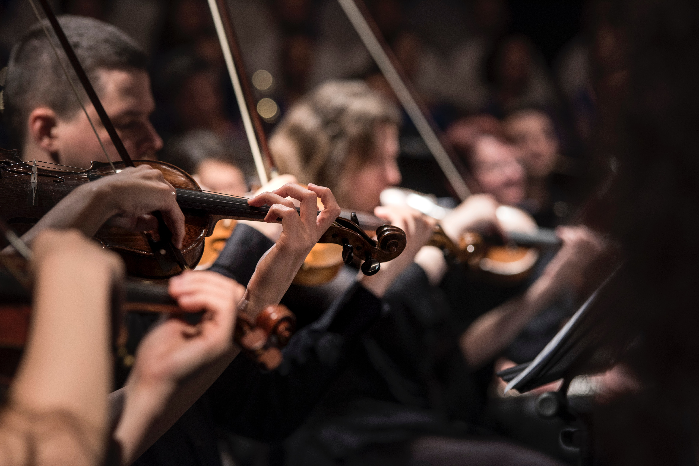

6월 8일 작센 지방의츠비카우(Zwickau)에서 태어났다. 아버지는 교양이 높은 서적상이며, 어머니는 아마추어이면서도 노래를 잘 불렀다. 일찍부터 음악적인 재능을 나타냈는데, 7세 때 작곡을 시작하여 10세가 지날 무렵에는 이미 오르간곡을 썼다고 한다. 츠비카우의 교회 오르가니스트에게 피아노를 배우는 한편 책을 탐독하여 스콧과 바이런에 경도하고 특히 장 파울(Jean Paul)에게는 평생 변치 않는 경의를 품고 있었다. 또 슈베르트(오스트리아)의 리트를 접하고 시와 음악의 완전한 융합에 커다란 감명을 받은 것도 이 무렵이었다.
1826년(16세) 아버지를 잃고 어머니의 희망에 따라 법률을 배우기 위해 라이프치히 대학에 입학, 다시 하이델베르크 대학에 진학했다. 그러나 음악에의 꿈과 집착을 끊지 못하고, 1830년(20세) 마침내 어머니의 승낙을 얻어 또다시 음악의 길에 전념케 된다. 작곡을 도른(Heinrich Dom, 1804~1892), 피아노를 비크(Friedrich Wieck, 1785~1873)에게 배우기 시작했으나 너무 무리한 연습을 한 결과, 오른손의 약손가락을 다쳐 피아니스트로서의 장래를 단념하지 않을 수 없었다. 이후에는 주로 창작에 전력을 기울이게 되었는데, 그 대상이 피아노곡에 쏠리게 된 것도 부득이한 일이었다.